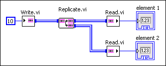

Replicating a channel creates a copy of the data in a channel and splits the channel into two outgoing channels that connect to two different reader endpoints. LabVIEW represents the copy version of reader endpoint as a Replicate endpoint of the same channel template. A replicate endpoint has one channel input and two channel outputs. Each of the two channel outputs receives a separate copy of the data from the channel input, and each reads its own separate copy of data.
The following illustration demonstrates a replicate channel of the Stream template.

|
Note��To replicate a channel, right-click a channel wire and select Insert�Replicate. The Insert�Replicate option is only available for some of the template channels. |